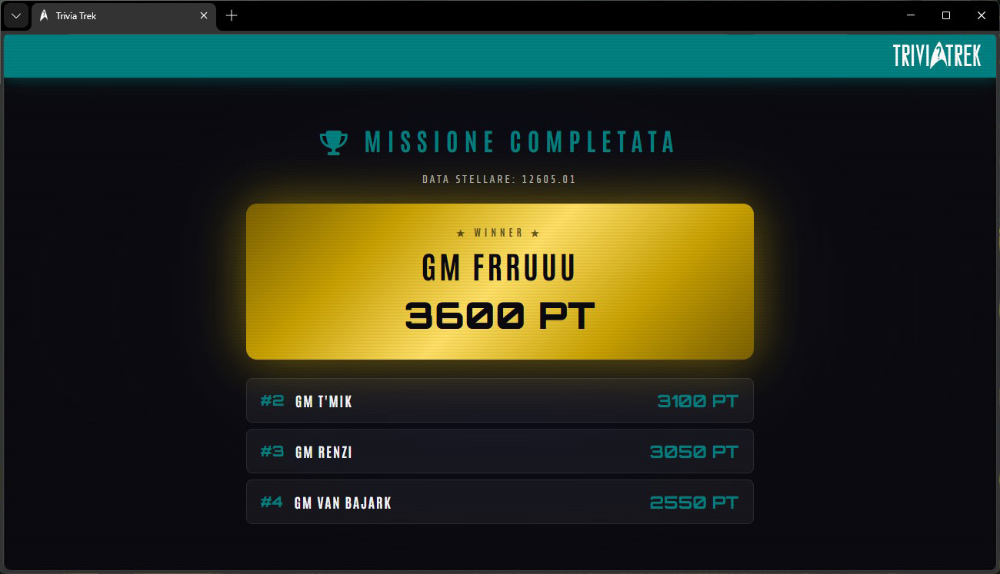

Inizio registrazione.
Come da accordi, apro il canale Teams alle 20.30. Subito si uniscono Renzi e Frruuu a stretto giro.
Si chiacchiera del più e del meno, si ricordano le avventure e si spettegola un po' sull'equipaggio della Afrodite, in attesa delle 21.00, ora in cui ci dovrebbe raggiungere
il buon Robert Van Bajark in collegamento da oltre oceano.
Nel frattempo, poco prima delle 21.00, si unisce alla reunion anche la dottoressa T'Mik, quasi a sorpresa aveva fatto sapere di una cena in corso che, a quanto pare, è finita
prima di quanto pensassimo.
Alle 21.30 circa, finalmente, Van Bajark si collega dall'Isola del Principe Edoardo.
Dopo un giro di saluti, pettegolezzi e chiacchiere di rito, si passa al clou della Reunion, il momento ludico: il quiz preparato ed allestito dallo scrivente
su piattaforma dedicata.
Il primo turno di gioco si conclude con Frruuu in netto vantaggio (500 punti) sugli altri che adottano una startegia di gioco prudente, fermi a 100 punti,
Nei successivi due turni di gioco, però, la situazione si ribalta con Frruuu che resta ferma a 500 punti (sbaglia anche la domanda su quale sia il titolo dell'episodio
che vede Picard assimilato dai Borg, cadendo nel trabocchetto: "I, Borg in luogo di "The Best of Both Worlds") mentre T'Mik balza in testa rispondendo
correttamente alle domande sulla sua materia di competenza (Scienza e Medicina, e Van Bajark ferrato in Ingnegneria e OPS.
I turni di gioco si susseguono frenetici e incalzanti. Non mancano, tuttavia, momenti di perplessità, indecisione o ilarità, e non si è esenti da errori più o meno
banali: a titolo esemplifocativo Frruuu sbaglia il nome della moglie di Adam Smith - tuttavia non ce la sentiamo di infierire: se le è ripassate tutte a bordo della Afrodite -
ma si rifà ricordando quello del compagno dell'XSO; oppure Renzi che non risponde correttamente alla domanda su Ernestina Scramiglio.
Momenmto di panico quando il collegamento si interrompe al turno di T'Mik che sta per rispondere alla domanda sulle capacità psichiche di Troi. Collegamento ripristinato
a tempo di record e il quiz prosegue, una domanda dopo l'altra.
Nonostatnte l'inzio incerto, è il nostro amato sasso, l'XO Frruuu ad aggiudicarsi la vittoria con 3600 punti. Seconda classificata la dottoressa T'Mik con 3100 punti.
Terza Renzi che conquista 3050 punti. Medaglia di legno all'XMO Van Bajark che si ferma a 25550 punti.
Fine registrazione.
GM Da Nee
XSO
USS Afrodite NCC-1863
